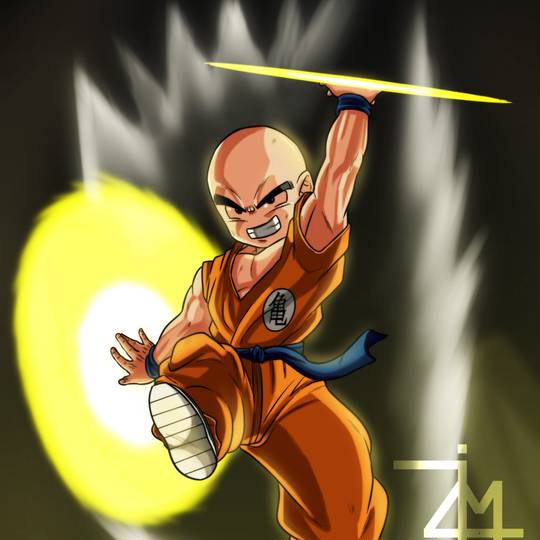
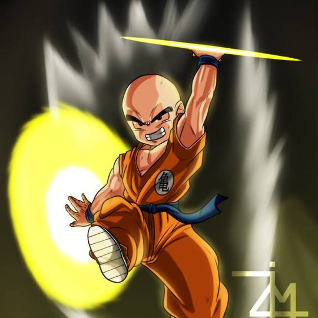

人物介紹
克林和孫悟空是龜仙流的同門師兄弟，他們是獨特的摯友關係。克林是悟空最要好的朋友，在武天老師嚴格培訓中與悟空共度了很多時光，克林在鳥山明原作《七龍珠》漫畫角色人氣調查中排名第四名。克林是「地球上最強的戰士」，原作的作者鳥山明說克林是最強的。
克林和孫悟空是龜仙流的同門師兄弟，他們是獨特的摯友關係。克林是悟空最要好的朋友，在武天老師嚴格培訓中與悟空共度了很多時光，克林在鳥山明原作《七龍珠》漫畫角色人氣調查中排名第四名。克林是「地球上最強的戰士」，原作的作者鳥山明說克林是最強的。
